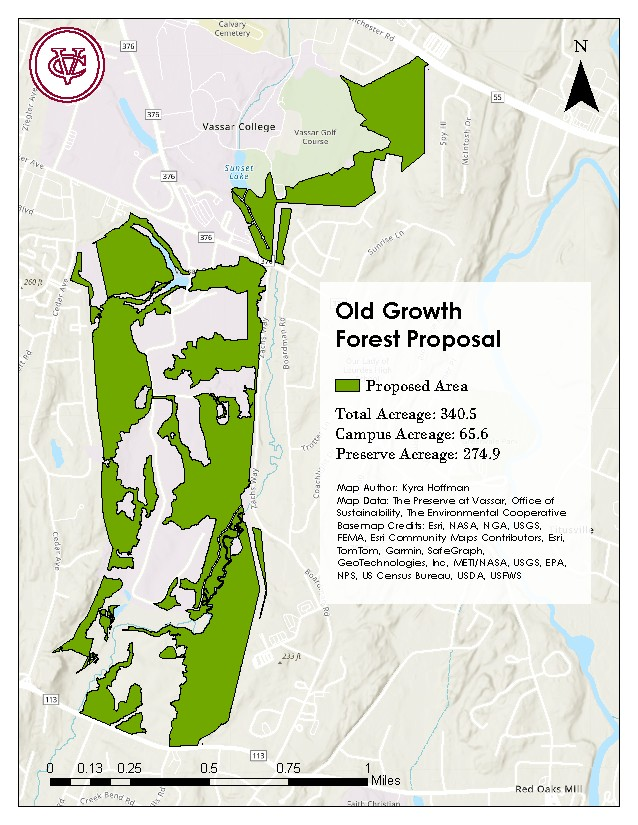

Old Growth Forest Proposal
The Preserve at Vassar is in the process of establishing a designated section of forest to be protected as future old growth forest. I was tasked with mapping the boundaries of what will be designated as future Old Growth Forest. This proposal included areas of both the Preserve at Vassar and the main college campus.
Project Details / Background
This was an exciting project for me personally. This is the first time the college administration has made solid steps to preserving forests and to stewarding the land on the main campus. The premise as presented by Keri Van Camp, the Director of the Vassar Ecological Preserve was to designate a corridor of more established forest both on the main Vassar College campus and the Ecological Preserve to protect as future old growth forest as long as the college owns the property.
I was tasked with mapping the boundaries of what would be designated into the Old Growth Forest Network (OGFN). To generate the area, I used forest eco-region data to show what parts of the property is more established forest and not at risk from invasive species. I also cut out easements from utilities, both sewer and electric lines. This designation will protect these areas for generations to come and provide access to future grants.
Image Gallery

An early version of the OGFN area that includes the eastern corridor of the preserve but that was eventually removed due to impact from invasive vine species.